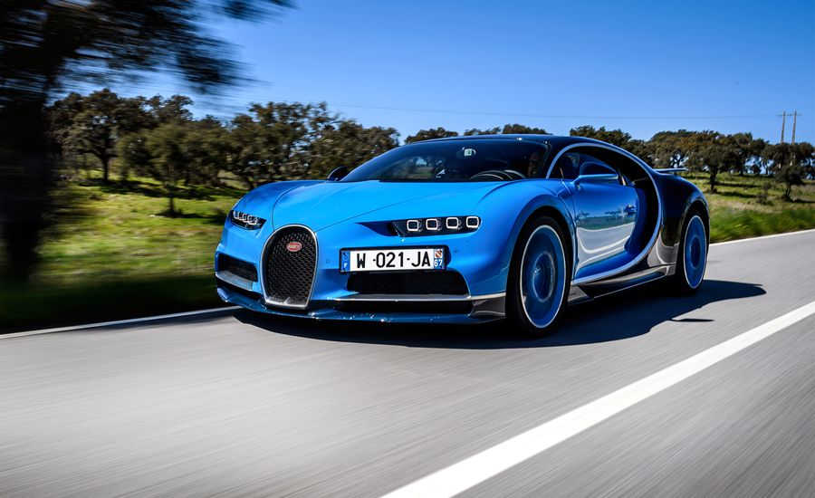
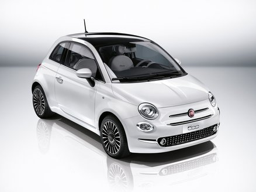
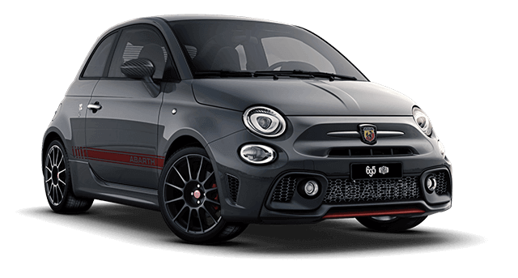

Automovilismo.
En esta seccion hablaremos sobre lo que acontece actualmente en la industria del automovilismo, innovaciones, etc.
Los 3 automoviles mas rapidos del 2018.
Primer lugar.
Hace un tiempo el titulo del automovil mas rapido del mundo lo tenia el Bugatti Veyron Super Sport el cual
era capaz de llegar a 431Km/h segun el libro Guinness, dicho Bugatti tiene un motor 16.4L en configuracion w12 capaz de
entregar 1001 HP.
Actualmente la marca Koenigsegg ha apoderado de este titulo con su Agera RS, el automovil sueco logro alcanzar una
velocidad maxima de 447Km/h en un espacio de 18 kilometros, aunque se le vio correr a mas de 455Km/h en un espacio mas largo. Este coche no se
produjo en masa, existen unicamente 25 ejemplares. El vehiculo esta hecho en su mayor parte de fribra de carbono lo cual lo vuelve muy ligero y
esto en combinacion con su potente motor capaz de entregar 1360 HP lo convirtieron en el vehiculo que lidera la lista actualmente.
Segundo lugar.
En el segundo lugar de esta lista se encuentra el Hennessey Venom GT.
Este vehiculo es fabricado por la empresa americana Hennessey Performance Engineering, lo curioso de este vehiculo es que es una especie
de "Frankenstein" ya que esta creado a partir de piezas mejoradas de otros vehiculos, un ejemplo de ello es su chasis y carroceria las cuales son de
un Lotus Elise su motor LS7 supercargado pertenece al Chervolte Corvett Z06. Este vehiculo se empezo a producir en
2010 y aun permanece entre los mas rapidos
Tercer lugar.
En el tercer lugar se encuentre el Bugatti Chiron, este vehiculo fue diseñado y arrojado al mercado como el sucesor del
Bugatti Veyron.
Al igual que el Veyron, el Chiron posee un motor W16 Quad-Turbo de 1500 HP, su carroceria es de fibra de carbono
y tiene traccion en las 4 ruedas, esto le ayuda en el agarre, tiene una velocidad maxima que ronda por los 450Km/h a pesar de esto Bugatti
afirma que el vehiculo es capaz de sobrepasar los 460Km/h pero sus neomaticos lo limitan, hasta no ver numeros no creer.
De este vehiculo solo se produciran 500 ejemplares de los cuales 170 ya estan comprados.
Abarth 595
El Abarth 595 es la version deportiva del Fiat 500 ambos coches se caracterizan por tener una carroceria pequena, el fiat 500 cuenta unicamente con 89 HP como maximo
en cambio el Abarth 595 cuenta con 145 HP puede seguir pareciendo poco pero tomando en cuenta que es un vehiculo pequeño, ligero y biplaza es caballaje suficiente para este pequeño vehiculo
con este vehiculo es sencillo pasar desapercibido ya que no llama la atencion por su carroceria, te das cuenta de lo que esconde hasta que lo escuchas rugir, el fiat 500 tiene un pequeño motor de 0.5L a diferencia de
su hermano el Abarth 595 que tiene un motor 1.4L Turbocargado.
Fiat 500.
Abarth 595.
